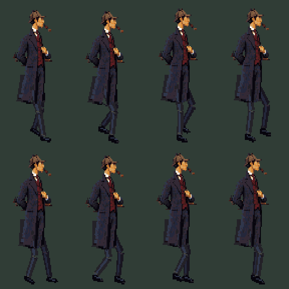
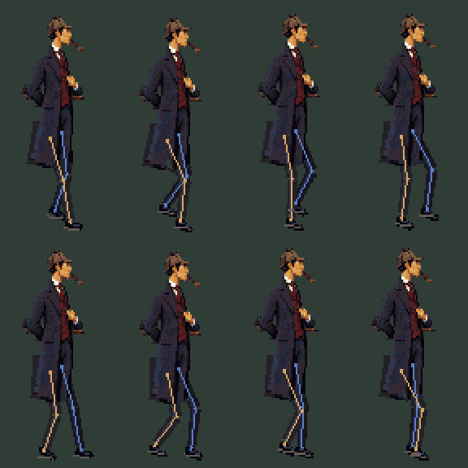

Character animation withdrawn after anatomy review. These walk and idle frames are retained only as a failed-method example. Replacement full-figure poses are being prepared before animation.
The corrected desk, the clock turn, and a new three-quarter walk with moving overcoat skirts. Try Holmes’s idle gestures and inspect the clues.
Idle:
Use the lens on the shavings below the bench. The wall clocks, ledger and tall-case clock can also be inspected.
Walk poses and construction
Eight walking cels

Leg construction and contact points

Withdrawn idle gestures — rejected anatomy example